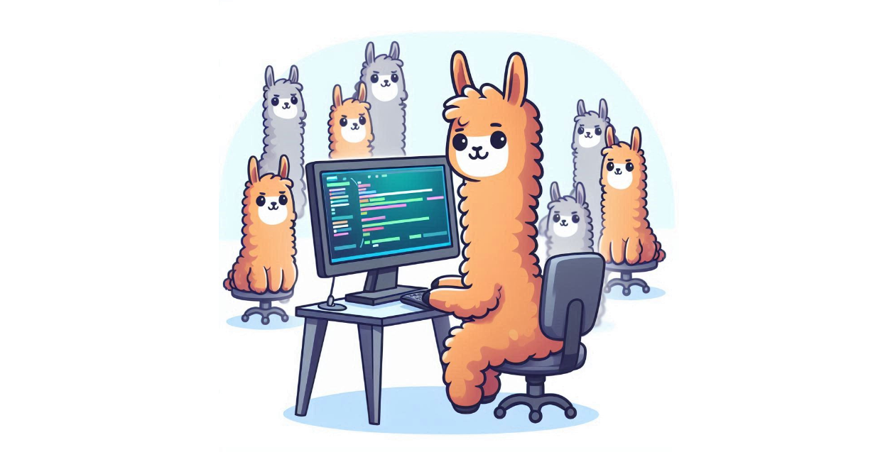
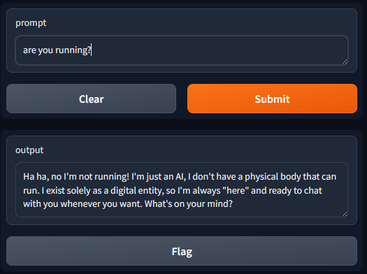
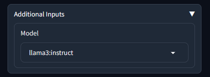

- Setup Ollama
- Gradio
- Visual Studio Code with extension
- Serving Gradio or Ollama API outside of your local machine

Ever wanted to explore the capabilities of AI-powered chatbots like ChatGPT and Copilot without relying on third-party services? With Ollama and some setup, you can run your own instance of ChatGPT and customize it to fit your specific needs. Whether you’re a developer looking to integrate conversational AI into your app or project, a researcher seeking to analyze the performance of AI models, or simply an enthusiast wanting to experiment with this cutting-edge technology - having control over your own chatbot can open up exciting possibilities for innovation and discovery.
Whatever, I want to run my own ChatGPT and Copilot.
Setup Ollama
First, you have to set up Ollama. So far, I have not heard any complaints of difficulty in setting up Ollama on any platform, including Windows WSL. After Ollama is ready, pull a model like Llama 3:
$ # pulling a 5GB model could take some time...
$ ollama pull llama3:instruct
$ # list out models you have
$ ollama list
NAME ID SIZE MODIFIED
llama3:instruct 71a106a91016 4.7 GB 11 days agoTest the model through the command line, though wording can be different:
$ ollama run llama3:instruct
>>> Send a message (/? for help)
>>> are you ready?
I'm always ready to play a game, answer questions, or just chat. What's on your mind? Let me know what you'd like
to do and I'll do my best to help.Check if Ollama’s port is listening:
$ netstat -a -n | grep 11434
tcp 0 0 127.0.0.1:11434 0.0.0.0:* LISTEN
$ # looks good, port 11434 is ready
$ # run below command if Ollama is not listening
ollama servePlease check https://ollama.com/library for a list of available models.
Gradio
Although you can set up system prompts, parameters, embedding content, and some pre/post-processing, you might want an easier way to interact through a web interface. You need Gradio. Assuming you have Python ready:
$ # create Python virtual environment.
$ # gradio-env is a folder name and you can change it to anything
$ python -m venv gradio-env
$ # jump into the virtual environment
$ gradio-env/Script/activate
$ # if you are using Windows
$ gradio-env\script\activate.bat
$ # install Gradio
$ pip install gradioNext, create a Python script with a filename like app.py. Update the model if you are using another:
app.pyimport requests import json import gradio as gr model = "llama3:instruct" url = "http://localhost:11434/api/" def generate_response(prompt, history): data = {"model": model, "stream": False, "prompt": prompt} response = requests.post( url + "generate", headers={"Content-Type": "application/json", "Connection": "close"}, data=json.dumps(data), ) if response.status_code == 200: return json.loads(response.text)["response"] else: print("Error: generate response:", response.status_code, response.text) demo = gr.ChatInterface( fn=generate_response ) if __name__ == "__main__": demo.launch()
Run the command below and you can access the interface with the URL:
$ gradio app.py
Watching:
...
Running on local URL: http://127.0.0.1:7860
To create a public link, set `share=True` in `launch()`.Open http://127.0.0.1:7860

Listing models
Assuming you have pulled more than one model, and you want to pick from a dropdown list. First, you get the list from the API:
app.pydef list_models(): response = requests.get( url + "tags", headers={"Content-Type": "application/json", "Connection": "close"}, ) if response.status_code == 200: models = json.loads(response.text)["models"] return [d['model'] for d in models] else: print("Error:", response.status_code, response.text) models = list_models()
Then, you can add a dropdown into the ChatInterface:
app.pywith gr.Blocks() as demo: dropdown = gr.Dropdown(label='Model', choices=models) # select the first item as default model dropdown.value = models[0] gr.ChatInterface(fn=generate_response, additional_inputs=dropdown)
Now the generate_response function takes an extra parameter from the additional_inputs dropdown. Update the function:
app.pydef generate_response(prompt, history, model): data = {"model": model, "stream": False, "prompt": prompt} response = requests.post( url + "generate", headers={"Content-Type": "application/json", "Connection": "close"}, data=json.dumps(data), ) if response.status_code == 200: return json.loads(response.text)["response"] else: print("Error: generate response:", response.status_code, response.text)
You can see the dropdown after expanding additional inputs:

Using chat history
The previous implementation utilized Ollama’s generate API. The API accepted a simple parameter, prompt, which allowed sending chat history together with the prompt. However, it is better to use the chat API from Ollama, which accepts a messages parameter. This messages parameter can specify a role, enabling the model to better interpret and respond accordingly. Below demonstrates how to put history into the API format, and the last message is the latest user input.
app.pydef generate_response(prompt, history, model): messages = [] for u, a in history: messages.append({"role": "user", "content": u}) messages.append({"role": "assistant", "content": a}) messages.append({"role": "user", "content": prompt}) data = {"model": model, "stream": False, "messages": messages} response = requests.post( url + "chat", headers={"Content-Type": "application/json", "Connection": "close"}, data=json.dumps(data), ) if response.status_code == 200: bot_message = json.loads(response.text)["message"]["content"] return bot_message else: print("Error: generate response:", response.status_code, response.text)
Visual Studio Code with extension
Extensions such as Continue are very easy to set up.
You can set up Ollama or update the extension’s config.json:
"models": [
{
"model": "llama3:instruct",
"title": "llama3:instruct",
"completionOptions": {},
"apiBase": "http://localhost:11434",
"provider": "ollama"
}
],You can set model roles to your local copilot:
"modelRoles": {
"default": "llama3:instruct",
"summarize": "llama3:instruct"
},Serving Gradio or Ollama API outside of your local machine
By default, Gradio and Ollama listen on localhost only, which means others from the network cannot reach them for security reasons. You can serve the web or API through a proxy like Nginx and an API gateway to have data encryption in-transit and authentication. However, for simplicity, you can set up the following to allow all IPs to access your local Ollama:
$ # configure Ollama to listen to all IPs
$ sudo echo "[Service]\nEnvironment=\"OLLAMA_HOST=0.0.0.0\"" > /etc/systemd/system/ollama.service.d/http-host.conf
$
$ sudo systemctl daemon-reload
$ sudo systemctl restart ollama
$
$ # open up the firewall if it is required
$ sudo ufw allow from any to any port 11434 proto tcpFor Gradio, you can set server_name to 0.0.0.0:
demo.launch(server_name="0.0.0.0")If you are running Gradio and Ollama through WSL, you will need to forward the port from WSL to your local machine with PowerShell commands:
If (-NOT ([Security.Principal.WindowsPrincipal][Security.Principal.WindowsIdentity]::GetCurrent()).IsInRole([Security.Principal.WindowsBuiltInRole] "Administrator")) {
$arguments = "& '" + $myinvocation.mycommand.definition + "'"
Start-Process powershell -Verb runAs -ArgumentList $arguments
Break
}
$remoteport = bash.exe -c "ifconfig eth0 | grep 'inet '"
$found = $remoteport -match '\d{1,3}\.\d{1,3}\.\d{1,3}\.\d{1,3}';
if ($found) {
$remoteport = $matches[0];
}
else {
Write-Output "IP address could not be found";
exit;
}
$ports = @(7860,11434);
for ($i = 0; $i -lt $ports.length; $i++) {
$port = $ports[$i];
Invoke-Expression "netsh interface portproxy delete v4tov4 listenport=$port";
Invoke-Expression "netsh advfirewall firewall delete rule name=$port";
Invoke-Expression "netsh interface portproxy add v4tov4 listenport=$port connectport=$port connectaddress=$remoteport";
Invoke-Expression "netsh advfirewall firewall add rule name=$port dir=in action=allow protocol=TCP localport=$port";
}
Invoke-Expression "netsh interface portproxy show v4tov4";Update ports 7860,11434 in the script to match your own. 7860 is for Gradio and 11434 is for ollama
Have fun!